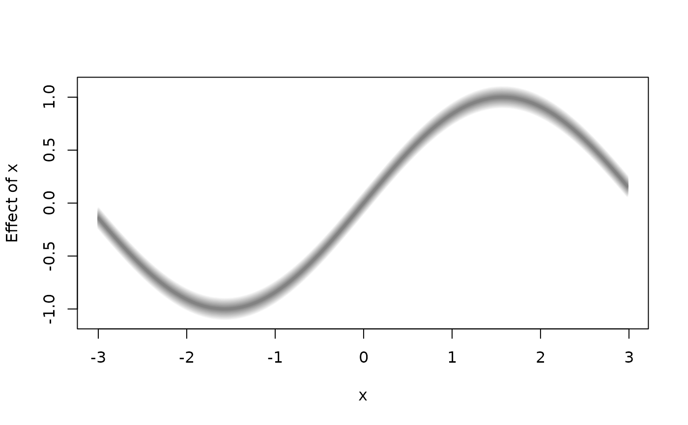

plot2d.RdFunction to plot simple 2D graphics for univariate effects/functions.
plot2d(x, residuals = FALSE, rug = FALSE, jitter = TRUE,
col.residuals = NULL, col.lines = NULL, col.polygons = NULL,
col.rug = NULL, c.select = NULL, fill.select = NULL,
data = NULL, sep = "", month = NULL, year = NULL,
step = 12, shift = NULL, trans = NULL,
scheme = 2, s2.col = NULL, grid = 50, ...)A matrix or data frame, containing the covariate for which the effect should be plotted
in the first column and at least a second column containing the effect. Another possibility is
to specify the plot via a formula, e.g. y ~ x, see the examples.
x may also be a character file path to the data to be used for plotting.
If set to TRUE, residuals may also be plotted if available.
Residuals must be supplied as an attribute named "residuals", which
is a matrix or data frame where the first column is the covariate and the second column
the residuals.
Add a rug to the plot.
The color of the partial residuals.
The color of the lines.
Specify the background color of polygons, if x has at least 3 columns,
i.e. column 2 and 3 can form one polygon.
Specify the color of the rug representation.
Integer vector of maximum length of columns of x, selects the
columns of the resulting data matrix that should be used for plotting. E.g. if x has 5
columns, then c.select = c(1, 2, 5) will select column 1, 2 and 5 for plotting. Note that
first element of c.select should always be the column that holds the variable for the
x-axis.
Integer vector, select pairwise the columns of the resulting data matrix
that should form one polygon with a certain background color specified in argument col.
E.g. x has three columns, or is specified with formula f1 + f2 ~ x, then setting
fill.select = c(0, 1, 1) will draw a polygon with f1 and f2 as boundaries.
If x has five columns or the formula is e.g. f1 + f2 + f3 + f4 ~ x, then setting
fill.select = c(0, 1, 1, 2, 2), the pairs f1, f2 and f3, f4
are selected to form two polygons.
If x is a formula, a data.frame or list. By default the variables
are taken from environment(x): typically the environment from which plot2d is
called. Note that data may also be a character file path to the data.
The field separator character when x or data is a character, see function
read.table.
Provide specific annotation for plotting estimation results for temporal
variables. month and year define the minimum time point whereas step specifies the
type of temporal data with step = 4, step = 2 and step = 1 corresponding to
quarterly, half yearly and yearly data.
Numeric constant to be added to the smooth before plotting.
Function to be applied to the smooth before plotting, e.g., to transform the plot to the response scale.
Sets the plotting scheme for polygons, possible values are 1 and 2.
The color for the second plotting scheme.
Integer, specifies the number of polygons for the second plotting scheme.
Other graphical parameters, please see the details.
For 2D plots the following graphical parameters may be specified additionally:
cex: Specify the size of partial residuals,
lty: The line type for each column that is plotted, e.g. lty = c(1, 2),
lwd: The line width for each column that is plotted, e.g. lwd = c(1, 2),
poly.lty: The line type to be used for the polygons,
poly.lwd: The line width to be used for the polygons,
density angle, border: See polygon,
...: Other graphical parameters, see function plot.
## Generate some data.
set.seed(111)
n <- 500
## Regressor.
d <- data.frame(x = runif(n, -3, 3))
## Response.
d$y <- with(d, 10 + sin(x) + rnorm(n, sd = 0.6))
if (FALSE) ## Estimate model.
b <- bamlss(y ~ s(x), data = d)
summary(b)
#> Error in summary(b): object 'b' not found
## Plot estimated effect.
plot(b)
#> Error in h(simpleError(msg, call)): error in evaluating the argument 'x' in selecting a method for function 'plot': object 'b' not found
plot(b, rug = FALSE)
#> Error in h(simpleError(msg, call)): error in evaluating the argument 'x' in selecting a method for function 'plot': object 'b' not found
## Extract fitted values.
f <- fitted(b, model = "mu", term = "s(x)")
#> Error in fitted(b, model = "mu", term = "s(x)"): object 'b' not found
f <- cbind(d["x"], f)
#> Error in data.frame(..., check.names = FALSE): object 'f' not found
## Now use plot2d.
plot2d(f)
#> Error in plot2d(f): object 'f' not found
plot2d(f, fill.select = c(0, 1, 0, 1))
#> Error in plot2d(f, fill.select = c(0, 1, 0, 1)): object 'f' not found
plot2d(f, fill.select = c(0, 1, 0, 1), lty = c(2, 1, 2))
#> Error in plot2d(f, fill.select = c(0, 1, 0, 1), lty = c(2, 1, 2)): object 'f' not found
plot2d(f, fill.select = c(0, 1, 0, 1), lty = c(2, 1, 2),
scheme = 2)
#> Error in plot2d(f, fill.select = c(0, 1, 0, 1), lty = c(2, 1, 2), scheme = 2): object 'f' not found
## Variations.
plot2d(sin(x) ~ x, data = d)
d$f <- with(d, sin(d$x))
plot2d(f ~ x, data = d)
d$f1 <- with(d, f + 0.1)
d$f2 <- with(d, f - 0.1)
plot2d(f1 + f2 ~ x, data = d)
plot2d(f1 + f2 ~ x, data = d, fill.select = c(0, 1, 1), lty = 0)
plot2d(f1 + f2 ~ x, data = d, fill.select = c(0, 1, 1), lty = 0,
density = 20, poly.lty = 1, poly.lwd = 2)

plot2d(f1 + f + f2 ~ x, data = d, fill.select = c(0, 1, 0, 1),
lty = c(0, 1, 0), density = 20, poly.lty = 1, poly.lwd = 2)